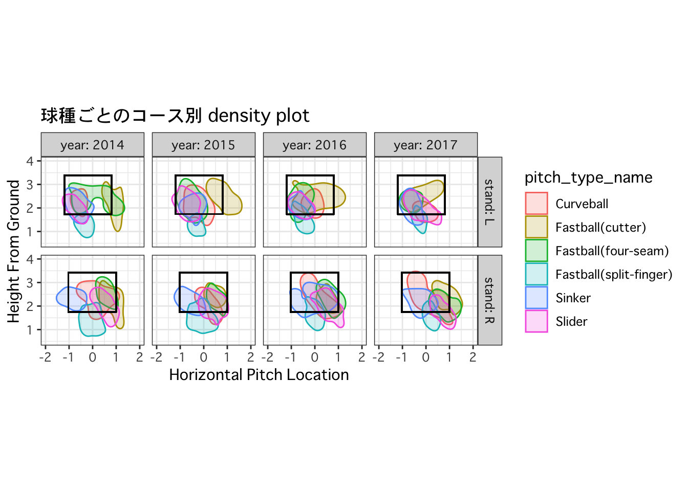

今回は「PITCHf/xから見た田中将大投手」ということでPITCHf/xシステムを通じて取得したMLBの投球データを使っていろんな角度から田中将大投手を見てみたいと思います。
1. PITCHf/xとは？
PITCHf/xとは、SPORTVISION社が開発した投手の投球速度や投球軌道を追跡するスピード測定器システムです。
マウンドから本塁までの投球の球速、マグヌス効果によって引き起こされる変化の量、リリースポイント、スピン量、本塁上を通過した時にストライクゾーン内に入っているかを知ることが出来ます。

2. 田中将大投手の成績について
以下は田中投手のMLBでの成績です。
| 年 | チーム | 登板 | 投球回 | 完投 | 自責点 | 奪三振 | 勝 | 敗 | セーブ | WHIP | 防御率 |
|---|---|---|---|---|---|---|---|---|---|---|---|
| 2014 | ヤンキース | 20 | 136 1/3 | 3 | 42 | 141 | 13 | 5 | 0 | 1.06 | 2.77 |
| 2015 | ヤンキース | 24 | 154 | 1 | 60 | 139 | 12 | 7 | 0 | 0.99 | 3.51 |
| 2016 | ヤンキース | 31 | 199 2/3 | 0 | 68 | 165 | 14 | 4 | 0 | 1.08 | 3.07 |
| 2017 | ヤンキース | 30 | 178 1/3 | 1 | 94 | 194 | 13 | 12 | 0 | 1.24 | 4.74 |
| 通算 | 105 | 668 1/3 | 5 | 264 | 639 | 52 | 28 | 0 | 1.10 | 3.56 |
2017年は、奪三振数と勝ち数が多かったものの自責点と負け数も多く、結果としてWHIP(Walks plus Hits per Inning Pitched、「投球回あたり与四球・被安打数合計」)の値が高くなってしまいました。
※ WHIP = (与四球 + 被安打) ÷ 投球回
1回に平均何人のランナーを出しているかという指標。一般に先発投手であれば1.00未満なら球界を代表するエースとされ、1.20未満ならエース級、逆に1.40を上回ると問題であると言われる。
田中投手は本当に不調だったのでしょうか？ 2017年と過去の傾向の違いをPITCHf/xのデータを使って見ていきましょう。
3. データの取得
まずPITCHf/xのデータの取得方法についてです。元データはhttp://gd2.mlb.com/components/にXML形式で置かれています。今回はRからこのデータをスクレイピングしてデータベースに格納してみます。
Rには既に{pitchRx}パッケージというまさにこれ専用の便利なパッケージがあります。ただ使い勝手が悪く処理が遅かったため、時間のかかるapply系の部分を{foreach}パッケージを使って高速化したり、データベース作成(sqliteですが…)を内部で完結させたりと自分用に少々手を加えました。
※{pitchRx}パッケージの基本的な使い方はコチラを参照。{pitchRx2}パッケージではinning_allデータのみスクレイピング可能にしています。
{pitchRx}パッケージではスクレイピングする際、初めと終わりの日付を指定するか、gameidを指定するのですが、大抵必要なデータはその中の一部で、全試合欲しい場合はほとんどないと思います。{pitchRx2}パッケージではget_gids()というgameidの一覧を取得する関数を追加しました。start_yearとend_yearを指定すれば、その年の全てのgameidを取得することが出来ます(pitxhRx2::game_idsにすでに2017年までのgameidデータが入ってるので、ご活用ください)。この関数を実行した後、stringr::str_detect()などで日付やチームを絞ってからscrape_inning_all()を実行するのが、効率的かと思います。
{pitchRx2}パッケージはまだまだ改良の余地があるので要望があれば、twitterでご連絡いただくか、GithubのIssuesに書き込むなりしていただければと思います。
# devtools::install_github("pontsuyu/pitchRx2")
# 必要なパッケージは同時読み込まれます
library(pitchRx2)
# 2008〜2017年のgameidはあらかじめ用意してあるgame_idsをお使いください
# ヤンキースのデータに絞ります
nya <- game_ids %>% str_subset("201[4-7].*nya.*")
# スクレイピングの実行(だいたい30分くらい)
scrape_inning_all(gid = nya, db_name = "nya")3. 球種割合
1球データをデータベースに格納できたのでクエリを実行し、データを抽出、分析します。
db <- src_sqlite("nya.sqlite3", create = F)
db_list_tables(db$con)## [1] "action" "atbat" "pitch" "po" "runner"# "action" "atbat" "pitch" "po" "runner" "sqlite_stat1" "sqlite_stat4"
# sqlite_stat1はデータベースに関する情報が入っている
# データの抽出
dat <- dbGetQuery(db$con, "SELECT
pitcher_name, -- 投手名
p_throws, -- 投手の利き腕
batter_name, -- 打者名
stand, -- 打者の立ち位置
pitch_type, -- 球種
start_speed, -- 初速
end_speed, -- 終速
spin_rate, -- 回転数
spin_dir, -- 回転軸
px, pz, -- 投球ロケーション
x0, y0, z0, -- リリースポイント
vx0, vy0, vz0, -- 速度
ax, ay, az, -- 加速度
b_height, -- バッターの身長(feet-inch)
break_angle, -- 変化角
break_length, -- 変化量
pit.num as event_num, -- 試合ごとのイベント番号
pit.des, -- 投球結果
type, -- 簡易投球結果
event, -- 打席結果
atb.date -- 日時
FROM
atbat atb, -- 打席テーブル
pitch pit -- 投球データテーブル
WHERE atb.url = pit.url -- スクレイピング先url
AND atb.inning = pit.inning -- イニング
AND atb.inning_side = pit.inning_side -- 表/裏
AND atb.gameday_link = pit.gameday_link -- gameid
AND atb.next_ = pit.next_ -- 次打者の有無
AND atb.num = pit.num -- イベント番号
-- キャンプ/プレーオフのデータは除外する処理
AND ((CAST(REPLACE(atb.date, '_', '') as NUMBER) BETWEEN 20140322 AND 20160928)
OR (CAST(REPLACE(atb.date, '_', '') as NUMBER) BETWEEN 20150406 AND 20151004)
OR (CAST(REPLACE(atb.date, '_', '') as NUMBER) BETWEEN 20160403 AND 20161002)
OR (CAST(REPLACE(atb.date, '_', '') as NUMBER) BETWEEN 20170402 AND 20171001))
AND atb.pitcher_name is not null
AND pit.pitch_type is not null
;")
# sort(unique(dat$pitcher_name))
# 見たいピッチャーの名前を入力
p_name <- "Masahiro Tanaka"
pitch <- dat %>%
filter(pitcher_name==p_name) %>%
separate(date, c("year", "month", "day"), sep = "_")
# 打者の立ち位置別球種割合を算出
pt <- pitch %>%
group_by(year, stand, pitch_type) %>%
summarise(N = n()) %>%
group_by(year, stand) %>%
mutate(per = N/sum(N)*100) %>%
inner_join(pitch_type, by = "pitch_type") %>% # 球種名称を紐付ける
arrange(year, pitch_type_name) %>%
mutate(row = row_number()) %>% # ここから下はグラフ用の処理
arrange(desc(row)) %>%
group_by(year, stand) %>%
mutate(cumsum = cumsum(per) - 0.5*per,
year_N = paste0(stand, "_", year, "(N=", sum(N), ")")) %>%
ungroup %>%
as.data.frame
ggplot(pt, aes(year_N, per, fill = pitch_type_name)) +
geom_bar(stat = "identity") +
geom_text(aes(label = round(per,digits = 2), y = cumsum), size = 3) +
ggtitle(paste0("Proportion of pitch types (", p_name, ")")) +
xlab("stand_year_pitching-N") + ylab("percent") +
theme(axis.text.x = element_text(angle = 45, hjust = 1),
plot.title = element_text(hjust = 0.5))捕手のリードの影響もありますが、当然右打者と左打者で攻め方が違って見えます。球種割合については近年Sliderの割合が増え、その分Fastball(cutter, four-seam)の割合が下がっているようです。
4. コース
打たれないようにするには球種だけでなく、コースも大事になってきます。田中投手の投球をアニメーションにして見てみましょう。投球は審判側から見て奥から手前に向かって投球しているイメージです。
library(animation)
# animateFXの出力に対し、追加したい層を指定(1個1個の要素が「＋」で足されていくイメージ)
x <- list(facet_grid(stand ~ year, labeller = label_both), coord_equal())
# アニメーションにして出力
saveGIF({animateFX(pitch, layers = x, point.alpha = 0.5)},
interval = 1.0, movie.name = paste0(p_name, ".gif"),
ani.height = 600, ani.width = 1200)
また、ホームベースを通過したときの球種ごとのコースで頻度が高いところを色付けしてみます。
snapshot <- getSnapshots(pitch, interval = 0.01)
last_snapshot <- as.data.frame(snapshot[,dim(snapshot)[2]-1,])
colnames(last_snapshot) <- c("Horizon", "y", "Height")
last_snapshot <- cbind(pitch, last_snapshot)
last_snapshot <- inner_join(last_snapshot, pitch_type) %>% filter(pitch_type_name!="Pitchout")
strikezone <- list()
for(i in 1:4) strikezone[[i]] <- getStrikezones(pitch[pitch$year == i+2013,]) %>% as.data.frame
names(strikezone) <- c(2014:2017)
strikezone <- bind_rows(strikezone, .id = "year")
last_snapshot <- inner_join(last_snapshot, strikezone)
theme_set(theme_bw(base_family = "Osaka"))
ggplot(last_snapshot, aes(Horizon, Height, color=pitch_type_name)) +
stat_density2d(aes(fill=pitch_type_name), geom="polygon", bins=1.5, alpha=.2) +
geom_rect(aes(ymax = Top, ymin = Bottom, xmax = Right, xmin = Left),
alpha = 0, colour = "black") +
xlim(-2, 2) + ylim(0.5, 4) +
ggtitle("球種ごとのコース別 density plot") +
xlab("Horizontal Pitch Location") + ylab("Height From Ground") +
facet_grid(stand ~ year, labeller = label_both) +
coord_equal()
左打者・右打者ともに外角低めに集まっていますが、近年の田中将大投手には
- リリースポイントのばらつき
- 左打者に対する甘い球
が多くなっているように見えます。2017年はMLB全体でも過去最多の本塁打数を記録しましたが、田中将大投手自身もリーグ3位の35本塁打を浴びてしまいました。
では、実際打たれた球はどのような球種・コースだったのでしょうか。
4. 対打席結果のまとめ
2017年は奪三振数が多いもののやはり被本塁打の多さが目立ちます。
| 打席結果 | 2014 | 2015 | 2016 | 2017 |
|---|---|---|---|---|
| Batters faced(対戦打者数) | 541 | 609 | 805 | 755 |
| Strikeout (奪三振) | 141 | 139 | 165 | 194 |
| Single (単打) | 81(15.0%) | 65(10.7%) | 121(15.0%) | 103(13.6%) |
| Double (二塁打) | 26(4.8%) | 32(5.3%) | 34(4.2%) | 42(5.6%) |
| Triple (三塁打) | 1(0.2%) | 3(0.5%) | 2(0.2%) | 0(0.0%) |
| Home Run (本塁打) | 15(2.8%) | 25(4.1%) | 22(2.7%) | 35(4.6%) |
| Walk (四球) | 21 | 27 | 36 | 40 |
| Hit By Pitch (死球) | 4 | 1 | 3 | 7 |
pitch_x <- pitch %>%
filter(type=="X", event %in% c("Single", "Double", "Triple", "Home Run")) %>%
inner_join(pitch_type)## Joining, by = "pitch_type"# ヒットを打たれた球種割合
round(prop.table(table(pitch_x$year, pitch_x$pitch_type_name),margin = 1)*100,digits = 2)##
## Curveball Fastball(cutter) Fastball(four-seam)
## 2014 5.69 2.44 26.83
## 2015 2.40 7.20 22.40
## 2016 5.03 12.29 5.59
## 2017 2.78 3.33 12.78
##
## Fastball(split-finger) Sinker Slider
## 2014 21.95 30.89 12.20
## 2015 30.40 23.20 14.40
## 2016 23.46 26.26 27.37
## 2017 23.89 29.44 27.782014年、2015年はいろんな球種が打たれてますが、2016年、2017年はSinker、Sliderに集中しているようです。2017年は長打を打たれている割合が高く、さらに被本塁打が多いので残塁させることが出来ず自責点が高くなってしまったと考えられます。
まとめ
今回は現状把握として田中将大投手の球種やコースに着目して集計をしました。他の投手について集計していないので断言できませんが、2017年の田中投手は不調というよりはMLB全体のバッターレベルの上昇が影響していて、田中将大投手の球質と上手く噛み合ってしまったことが原因かもしれません。そして、ランナーを背負ったときに残塁させることが出来ず、長打を打たれてしまい結果として防御率が高くなってしまったのだと考えられます。